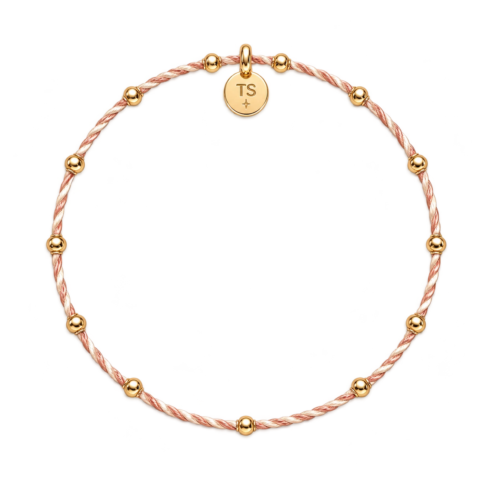

The Eras

Lover
2019
Loading…
YOUR LITTLE CORNER
我的
Track index
Find a familiar favourite, or a deeper cut.
Sources
Archive sources checked June 4, 2026. Liner notes are editorial interpretations.
- Taylor Swift Official
- Britannica: Taylor Swift biography
- GRAMMY.com: era-by-era album guide
- GRAMMY.com: Midnights announcement context
- GRAMMY.com: Road to folklore
- AP News: The Life of a Showgirl announcement and tracklist
- AP News: The Life of a Showgirl first-week record
- AP News: Taylor Swift and Travis Kelce engagement
- AP News: Swift regains control of first six albums
- NPR: masters rights background
An independent fan archive. Music and lyrics belong to their respective rights holders. Your notes and favourites stay in this browser.